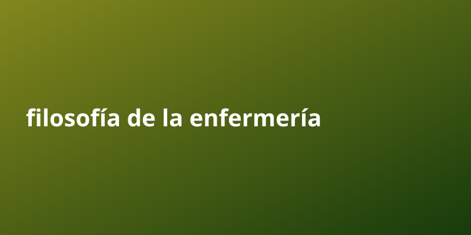

Filosofía de la enfermería | Filosofía de la enfermería

El tema de filosofía de la enfermería esta transformando la forma en que miles de personas trabajan y generan ingresos.
La filosofía de la enfermería es la reflexión sobre los fenómenos de la práctica del cuidado, concebido como eje fundamental de la enfermería y núcleo de su práctica profesión y base para la construcción del conocimiento, que permitan a la enfermería fundamentar su identidad y dar razón de su quehacer profesional. La filosofía de enfermería considera, desde el punto de vista antropológico, que la persona es el sujeto del cuidado y que éste implica interacciones intersubjetivas y experienciales que caracterizan a los participantes en la acción de cuidado: el profesional de enfermería, la persona cuidaba y su familia vistos como una totalidad.
Puntos clave sobre filosofía de la enfermería
- La informacion publica gratuita es una mina de oro subestimada. Saber recopilarla y empaquetarla es una habilidad rentable.
- Diferenciarse no requiere inventar nada: basta con curadar, organizar y entregar valor de forma clara y constante.
- La clave esta en la consistencia. Los sistemas que funcionan se apoyan en procesos repetibles y medibles, no en suerte.
Por que importa
La informacion publica gratuita es una mina de oro subestimada. Saber recopilarla y empaquetarla es una habilidad rentable. Diferenciarse no requiere inventar nada: basta con curadar, organizar y entregar valor de forma clara y constante.
Guia paso a paso
- Investiga bien el tema de filosofía de la enfermería usando fuentes publicas gratuitas.
- Organiza la informacion en puntos claros y accionables.
- Crea un sistema que publique de forma automatica y constante.
- Revisa metricas y elimina lo que no aporta valor.
- Escala lo que funciona y delega el resto a la automatizacion.
Errores comunes a evitar
- Quierer hacerlo todo manualmente en lugar de automatizar.
- Ignorar la consistencia y publicar solo cuando hay tiempo.
- Copiar sin curador: el valor esta en organizar y entregar claridad.
- No medir resultados y repetir lo que no funciona.
- Subestimar el poder de la frecuencia y el volumen compuesto.
Preguntas frecuentes
¿Cuanto tiempo tarda en verse resultado con filosofía de la enfermería?
Depende de la constancia; con publicacion automatica, el efecto compuesto aparece semana a semana.
¿Necesito invertir dinero para empezar?
No. Con fuentes publicas y automatizacion puedes arrancar sin capital inicial.
¿Por que la frecuencia importa tanto?
Porque cada pieza suma alcance acumulado; el volumen constante vence a la perfeccion esporadica.
¿Como diferencio mi contenido?
Curado, claridad y formato: empaquetar lo publico en algo util y facil de consumir.
Checklist rapida
- Define una meta clara de filosofía de la enfermería y un plazo realista.
- Automatiza la parte repetitiva para no depender de tu tiempo.
- Mide resultados cada ciclo y ajusta lo que no funcione.
- Reutiliza contenido publico bien curado en vez de crear desde cero.
- Mantén consistencia: el volumen compuesto es la clave del crecimiento.
Conclusion
El factor tiempo juega a tu favor cuando todo esta automatizado. Cuanto antes inicies, antes compone interes compuesto.
Herramienta recomendada para empezar: https://example.com/?ref=AUTONICHE